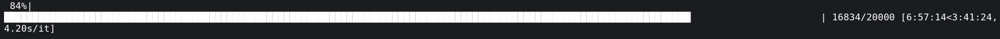
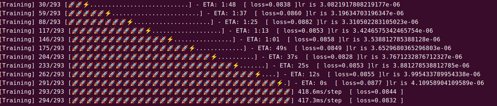

[00:00:00 < 9999:9999:9999]


1
2
3
4
5
6
7
8
9
10
11
12
13
14
15
16
17
18
19
20
21
22
23
24
25
26
27
28
29
30
31
32
33
34
35
36
37
38
39
40
41
42
43
44
45
46
47
48
49
50
51
52
53
54
55
56
57
58
59
60
61
62
63
64
65
66
67
68
69
70
71
72
73
74
75
76
77
78
79
80
81
82
83
|
class ProgressBar(object):
'''
super progress bar
Example:
>>> pbar = ProgressBar(n_total=30,desc='Training')
>>> step = 2
>>> pbar(step=step,info={'loss':20})
'''
def __init__(self, n_total, width=30, desc='Training',num_epochs = None):
self.width = width
self.n_total = n_total
self.desc = desc
self.start_time = time.time()
self.num_epochs = num_epochs
def reset(self):
"""Method to reset internal variables."""
self.start_time = time.time()
def _time_info(self, now, current):
time_per_unit = (now - self.start_time) / current
if current < self.n_total:
eta = time_per_unit * (self.n_total - current)
if eta > 3600:
eta_format = ('%d:%02d:%02d' %
(eta // 3600, (eta % 3600) // 60, eta % 60))
elif eta > 60:
eta_format = '%d:%02d' % (eta // 60, eta % 60)
else:
eta_format = '%ds' % eta
time_info = f' - ETA: {eta_format}'
else:
if time_per_unit >= 1:
time_info = f' {time_per_unit:.1f}s/step'
elif time_per_unit >= 1e-3:
time_info = f' {time_per_unit * 1e3:.1f}ms/step'
else:
time_info = f' {time_per_unit * 1e6:.1f}us/step'
return time_info
def _bar(self, now, current):
# ⚡ ❓
# you can define your own symbol here ^ ^
# finished symbol
f_symbol = emoji.emojize('🚀')
# running symbol
r_symbol = emoji.emojize('⚡')
recv_per = current / self.n_total
bar = f'[{self.desc}] {current}/{self.n_total} ['
if recv_per >= 1: recv_per = 1
prog_width = int(self.width * recv_per)
if prog_width > 0:
bar += f_symbol * (prog_width - 1)
if current < self.n_total:
bar += r_symbol
else:
bar += f_symbol
bar += '.' * (self.width - prog_width)
bar += ']'
return bar
def epoch_start(self,current_epoch):
sys.stdout.write("\n")
if (current_epoch is not None) and (self.num_epochs is not None):
sys.stdout.write(f"Epoch: {current_epoch}/{self.num_epochs}")
sys.stdout.write("\n")
def __call__(self, step, info={}):
now = time.time()
current = step + 1
bar = self._bar(now, current)
show_bar = f"\r{bar}" + self._time_info(now, current)
if len(info) != 0:
show_bar = f'{show_bar} ' + " [" + "-".join(
[f' {key}={value:.4f} ' for key, value in info.items()]) + "]"
if current >= self.n_total:
show_bar += '\n'
sys.stdout.write(show_bar)
sys.stdout.flush()
|
佬分享传送门 https://www.94rg.com/article/1881
| 较为常用 |
| 🌹🍀🍎💰📱🌙🍁🍂🍃🌷💎🔪🔫🏀⚽⚡👄👍🔥 |
| emoji表情 |
| 😀😁😂😃😄😅😆😉😊😋😎😍😘😗😙😚☺😇😐😑😶😏😣😥😮😯😪😫😴😌😛😜😝😒😓😔😕😲😷😖😞😟😤😢😭😦😧😨😬😰😱😳😵😡😠 |
| emoji人物 |
| 👦👧👨👩👴👵👶👱👮👲👳👷👸💂🎅👰👼💆💇🙍🙎🙅🙆💁🙋🙇🙌🙏👤👥🚶🏃👯💃👫👬👭💏💑👪 |
| emoji手势 |
| 💪👈👉☝👆👇✌✋👌👍👎✊👊👋👏👐✍ |
| emoji日常 |
| 👣👀👂👃👅👄💋👓👔👕👖👗👘👙👚👛👜👝🎒💼👞👟👠👡👢👑👒🎩🎓💄💅💍🌂 |
| emoji手机 |
| 📱📲📶📳📴☎📞📟📠 |
| emoji公共 |
| ♻🏧🚮🚰♿🚹🚺🚻🚼🚾⚠🚸⛔🚫🚳🚭🚯🚱🚷🔞💈 |
| emoji动物 |
| 🙈🙉🙊🐵🐒🐶🐕🐩🐺🐱😺😸😹😻😼😽🙀😿😾🐈🐯🐅🐆🐴🐎🐮🐂🐃🐄🐷🐖🐗🐽🐏🐑🐐🐪🐫🐘🐭🐁🐀🐹🐰🐇🐻🐨🐼🐾🐔🐓🐣🐤🐥🐦🐧🐸🐊🐢🐍🐲🐉🐳🐋🐬🐟🐠🐡🐙🐚🐌🐛🐜🐝🐞🦋 |
| emoji植物 |
| 💐🌸💮🌹🌺🌻🌼🌷🌱🌲🌳🌴🌵🌾🌿🍀🍁🍂🍃 |
| emoji自然 |
| 🌍🌎🌏🌐🌑🌒🌓🌔🌕🌖🌗🌘🌙🌚🌛🌜☀🌝🌞⭐🌟🌠☁⛅☔⚡❄🔥💧🌊 |
| emoji饮食 |
| 🍇🍈🍉🍊🍋🍌🍍🍎🍏🍐🍑🍒🍓🍅🍆🌽🍄🌰🍞🍖🍗🍔🍟🍕🍳🍲🍱🍘🍙🍚🍛🍜🍝🍠🍢🍣🍤🍥🍡🍦🍧🍨🍩🍪🎂🍰🍫🍬🍭🍮🍯🍼☕🍵🍶🍷🍸🍹🍺🍻🍴 |
| emoji文体 |
| 🎪🎭🎨🎰🚣🛀🎫🏆⚽⚾🏀🏈🏉🎾🎱🎳⛳🎣🎽🎿🏂🏄🏇🏊🚴🚵🎯🎮🎲🎷🎸🎺🎻🎬 |
| emoji恐怖 |
| 😈👿👹👺💀☠👻👽👾💣 |
| emoji旅游 |
| 🌋🗻🏠🏡🏢🏣🏤🏥🏦🏨🏩🏪🏫🏬🏭🏯🏰💒🗼🗽⛪⛲🌁🌃🌆🌇🌉🌌🎠🎡🎢🚂🚃🚄🚅🚆🚇🚈🚉🚊🚝🚞🚋🚌🚍🚎🚏🚐🚑🚒🚓🚔🚕🚖🚗🚘🚚🚛🚜🚲⛽🚨🚥🚦🚧⚓⛵🚤🚢✈💺🚁🚟🚠🚡🚀🎑🗿🛂🛃🛄🛅 |
| emoji物品 |
| 💌💎🔪💈🚪🚽🚿🛁⌛⏳⌚⏰🎈🎉🎊🎎🎏🎐🎀🎁📯📻📱📲☎📞📟📠🔋🔌💻💽💾💿📀🎥📺📷📹📼🔍🔎🔬🔭📡💡🔦🏮📔📕📖📗📘📙📚📓📃📜📄📰📑🔖💰💴💵💶💷💸💳✉📧📨📩📤📥📦📫📪📬📭📮✏✒📝📁📂📅📆📇📈📉📊📋📌📍📎📏📐✂🔒🔓🔏🔐🔑🔨🔫🔧🔩🔗💉💊🚬🔮🚩🎌💦💨 |
| emoji标志 |
| ♠♥♦♣🀄🎴🔇🔈🔉🔊📢📣💤💢💬💭♨🌀🔔🔕✡✝🔯📛🔰🔱⭕✅☑✔✖❌❎➕➖➗➰➿〽✳✴❇‼⁉❓❔❕❗©®™🎦🔅🔆💯🔠🔡🔢🔣🔤🅰🆎🅱🆑🆒🆓ℹ🆔Ⓜ🆕🆖🅾🆗🅿🆘🆙🆚🈁🈂🈷🈶🈯🉐🈹🈚🈲🉑🈸🈴🈳㊗㊙🈺🈵▪▫◻◼◽◾⬛⬜🔶🔷🔸🔹🔺🔻💠🔲🔳⚪⚫🔴🔵 |
| emoji生肖 |
| 🐁🐂🐅🐇🐉🐍🐎🐐🐒🐓🐕🐖 |
| emoji星座 |
| ♈♉♊♋♌♍♎♏♐♑♒♓⛎ |
| emoji钟表 |
| 🕛🕧🕐🕜🕑🕝🕒🕞🕓🕟🕔🕠🕕🕡🕖🕢🕗🕣🕘🕤🕙🕥🕚🕦⌛⏳⌚⏰⏱⏲🕰 |
| emoji心形 |
| 💘❤💓💔💕💖💗💙💚💛💜💝💞💟❣ |
| emoji花草 |
| 💐🌸💮🌹🌺🌻🌼🌷🌱🌿🍀 |
| emoji树叶 |
| 🌿🍀🍁🍂🍃 |
| emoji月亮 |
| 🌑🌒🌓🌔🌕🌖🌗🌘🌙🌚🌛🌜🌝 |
| emoji水果 |
| 🍇🍈🍉🍊🍋🍌🍍🍎🍏🍐🍑🍒🍓 |
| emoji钱币 |
| 💴💵💶💷💰💸💳 |
| emoji交通 |
| 🚂🚃🚄🚅🚆🚇🚈🚉🚊🚝🚞🚋🚌🚍🚎🚏🚐🚑🚒🚓🚔🚕🚖🚗🚘🚚🚛🚜🚲⛽🚨🚥🚦🚧⚓⛵🚣🚤🚢✈💺🚁🚟🚠🚡🚀 |
| emoji建筑 |
| 🏠🏡🏢🏣🏤🏥🏦🏨🏩🏪🏫🏬🏭🏯🏰💒🗼🗽⛪🌆🌇🌉 |
| emoji办公 |
| 📱📲☎📞📟📠🔋🔌💻💽💾💿📀🎥📺📷📹📼🔍🔎🔬🔭📡📔📕📖📗📘📙📚📓📃📜📄📰📑🔖💳✉📧📨📩📤📥📦📫📪📬📭📮✏✒📝📁📂📅📆📇📈📉📊📋📌📍📎📏📐✂🔒🔓🔏🔐🔑 |
| emoji箭头 |
| ⬆↗➡↘⬇↙⬅↖↕↔↩↪⤴⤵🔃🔄🔙🔚🔛🔜🔝 |